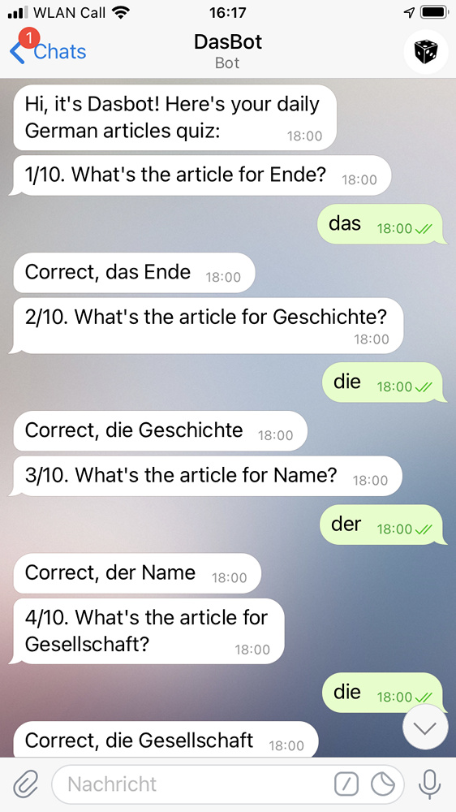

Say hallo to Dasbot!
Its mission is to help you learn German articles.
It will send you a short quiz on Telegram every day. With its guidance, you will learn the genders of 2000 most frequently used German nouns.
You can change the preferred time and length of the quiz. To unsubscribe, turn the quiz off in the settings or just block the bot.
For bug reports and suggestions, please send me a Telegram message or an e-mail.
